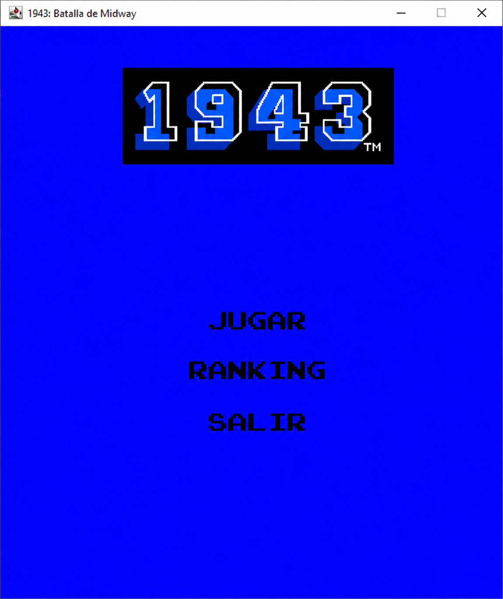
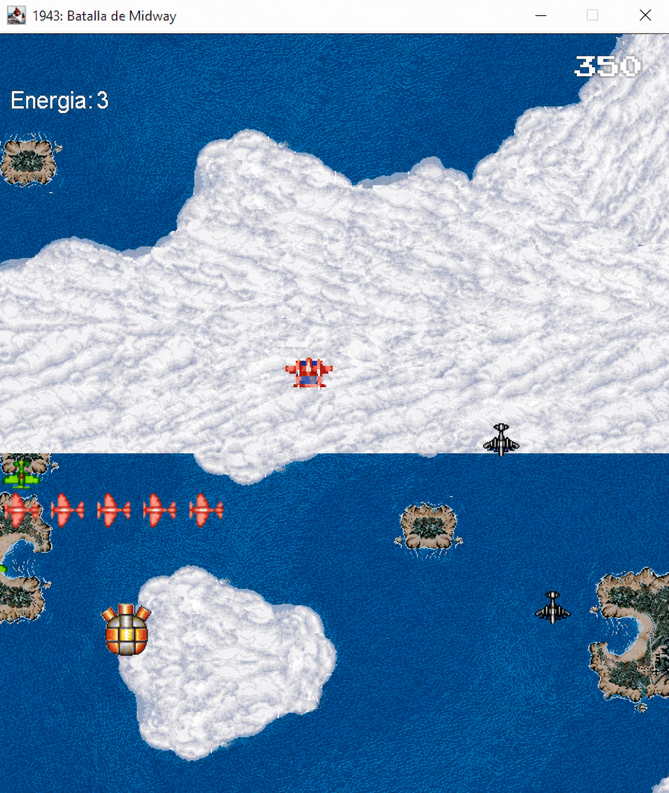
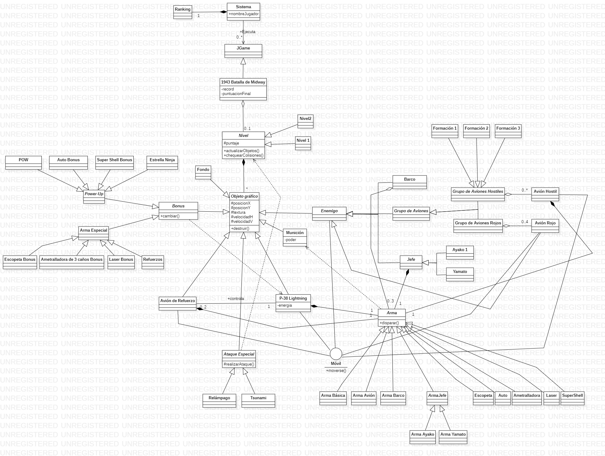

Backend · Java · Facultad
Plataforma de escritorio para ejecutar distintos videojuegos, con "1943: Batalla de Midway" como primer juego implementado.

La consigna era construir una plataforma de software que permita ejecutar diferentes videojuegos, implementando los elementos básicos comunes a todos ellos para que sea fácil desarrollar y sumar nuevos juegos a futuro. Sobre esa base, el juego que desarrollamos fue "1943: Batalla de Midway": el jugador controla un avión de la Fuerza Aérea de EE. UU. y su misión es abrirse paso a través de distintos niveles destruyendo a la flota aérea del Imperio de Japón, hasta enfrentar y destruir al buque insignia enemigo, el Yamato.
Al elegir el juego, se puede consultar la tabla de ranking con los 10 mejores puntajes o arrancar a jugar directamente. El objetivo es destruir a los aviones enemigos para llegar a la fase final de cada misión y enfrentarse al "jefe" de turno; para pasar de nivel hay que causarle entre un 70% y 100% de daño, o la misión se repite.
El avión del jugador tiene una barra de energía que baja al recibir impactos, chocar con otro avión, agotarse el tiempo de misión o usar ataques especiales (Relámpago y Tsunami). En el camino se pueden atrapar power-ups y armas con efecto temporal —Escopeta, Ametralladora, Láser, entre otras— que se potencian si se repite el mismo bonus. Los controles (flechas para moverse, X para disparar, Z para ataque especial, espacio para pausa) son totalmente reconfigurables, con un botón para volver a los valores por defecto.
El juego termina cuando el jugador destruye al Yamato (jefe final obligatorio) o cuando se queda sin energía.
El diseño de clases modela la jerarquía típica de este tipo de juego: un JGame base del que hereda 1943 Batalla de Midway, niveles compuestos por Objeto gráfico (aviones, bonus, munición), una jerarquía de Enemigo (aviones, barcos y jefes finales) y de Arma para cada tipo de disparo, y un Sistema que administra el Ranking de puntajes.

